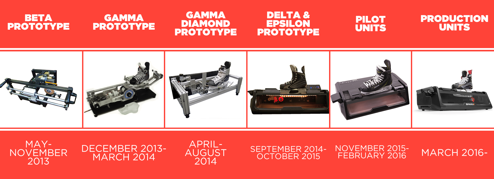

The project this year is to build a new mechanical tool. Sparx is a company, founded by Russell Layton in 2012, that built a new mechanical tool.
A little background on Russell: we went to grad school together in mechanical engineering around 15 years ago. He then worked for various medical device companies for a decade or so. His kids like playing hockey, and sharpening skates is expensive. After paying to have skates sharpened for a few winters, Russell bought a manual skate sharpening jig. After using it for a while, he thought he might able to improve it.
Here are some pictures of prototypes, built over the course of 3 years.
Russell talks about building prototypes in a series of videos. Let me just cherry-pick a few important quotes for you.
(6:20-6:41) "Auto-dressing a traditional grinding wheel was difficult, required a lot of complex mechanisms, and generated a ton of dust. We were almost overwhelmed by the engineering challenge of generating the dust and then collecting the dust into a filter."
(0:50-1:01) "Having all those externally accessible parts made it very easy for a human to disturb the sharpening process."
(1:18-1:38) "We were trying to design a product that looked good and functioned at the exact same time, and we kept tripping over some of the fundamental mechanical problems at the same time that we were dragging along this aesthetic design, and that just wasn't the way to do it."
(1:44-2:26) "What we have here is basically an Erector Set. This allowed us to have as variables the diameter of the grinding wheel, whether or not the grinding wheel was a vitrified bonded traditional wheel or a more modern superabrasive wheel. We could play with motor selection. We could adjust the length of the motor pivot arm. We could change the normal force between the skate and the grinding wheel. This Erector Set design was totally the way to go. We didn't know it at first, but once we got to here, we could very quickly iterate."
(1:37-1:43) "3D printing was a very big thing for us, and it actually made it possible for us to make this product."
(2:44-2:52) "We went and built 6 of these for the event, at a cost of $15,000 per prototype."
(4:52-5:09) "We went from SLA to machined to a vacuum-formed tray, going from hundreds of dollars to hundreds of dollars to very, very low cost vacuum-formed trays as we got closer to mass production."
(6:31-6:36) "There's close to a million dollars in tooling to build this product."
(8:13-8:18) "Every single component on this product had to be redesigned."